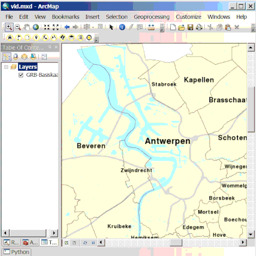

Zoek een Perceel
 Met perceel service van geopunt kan je op getrapte wijze de ligging van een perceel zoeken. Je selecteert eerst de gemeente waarin je wenst te zoeken, daarna het departement en de sectie binnen het kadaster, dan krijg je een keuzelijst met alle perceelnummers binnen die sectie. Je kunt zoomen naar elk niveau met de verrekijker knop, hierbij wordt ook de omtrek van dit niveau getoond.
Met perceel service van geopunt kan je op getrapte wijze de ligging van een perceel zoeken. Je selecteert eerst de gemeente waarin je wenst te zoeken, daarna het departement en de sectie binnen het kadaster, dan krijg je een keuzelijst met alle perceelnummers binnen die sectie. Je kunt zoomen naar elk niveau met de verrekijker knop, hierbij wordt ook de omtrek van dit niveau getoond.
Je kunt de geselecteerde percelen toevoegen de kaart als kaartlaag met de knop Opslaan of enkel de omtrek markeren als graphic en text-annotation met de knop Markeer locatie.
De data voor de service komt uit het CADMAP product van AGIV, afgeleid uit de kadastrale plannen Algemene Administratie van de Patrimonium Documentatie (AAPD) van de FOD Financiën.
